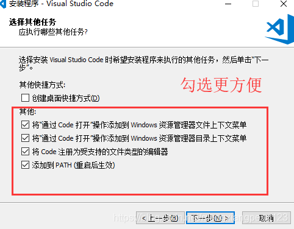

准备工作
- 下载vscode
- mingw和mingw-w64是有区别的，直观的说,mingw-w64更加强大，推荐使用离线版
- mingw-w64下载地址
- mingw-w64离线版下载地址
安装
vscode的安装

MingW安装
- 下载离线版安装包，直接解压即可
配置
配置环境变量
在环境变量处添加解压的mingw目录下的bin文件加所在的目录地址，如我的就是D:\Program Files\mingw64\bin
打开命令行，输入gcc -v
vscode配置
- 添加这两个插件
Code RunnerC/C++ IntelliSense, debugging, and code browsing
在文件->首选项->设置->扩展->Run Code configuration, 勾选Run In Terminal
最后的配置
- 新建一个
test文件夹，并用vscode打开 - 在
test文件夹中新建一个test.cpp文件和.vscode文件夹，并在test.cpp输入以下内容
#include <iostream>
int total(int n){
int sum = 0;
for(int i = 0; i < n; i++)
sum += i;
return sum;
}
int main() {
int a = 10, b = 20;
int sum = total(a);
std::cout << sum << std::endl;
return 0;
}
- 1
- 2
- 3
- 4
- 5
- 6
- 7
- 8
- 9
- 10
- 11
- 12
- 13
- 14
- 15
- 16
- 17
- 在
.vscode文件夹中新建launch.json和tasks.json文件 - 在
tasks.json中输入以下内容
{
"version": "2.0.0",
"command": "g++",
"args": [
"-g",
"-pthread",
"${file}",
"-o",
"${fileDirname}/${fileBasenameNoExtension}.exe"
],
"problemMatcher": {
"owner": "cpp",
"fileLocation": [
"relative",
"${workspaceRoot}"
],
"pattern": {
"regexp": "^(.*):(\\d+):(\\d+):\\s+(warning|error):\\s+(.*)$",
"file": 1,
"line": 2,
"column": 3,
"severity": 4,
"message": 5
}
},
"group": {
"kind": "build",
"isDefault": true
}
}
- 1
- 2
- 3
- 4
- 5
- 6
- 7
- 8
- 9
- 10
- 11
- 12
- 13
- 14
- 15
- 16
- 17
- 18
- 19
- 20
- 21
- 22
- 23
- 24
- 25
- 26
- 27
- 28
- 29
- 30
- 在
launch.json中输入以下内容
{
"version": "0.2.0",
"configurations": [
{
"name": "C/C++",
"type": "cppdbg",
"request": "launch",
"program": "${fileDirname}/${fileBasenameNoExtension}.exe",
"args": [],
"stopAtEntry": false,
"cwd": "${workspaceFolder}",
"environment": [],
"externalConsole": true,
"MIMode": "gdb",
"miDebuggerPath": "D:/Program Files/mingw64/bin/gdb.exe", //这里换成你自己的路径地址
"preLaunchTask": "g++",
"setupCommands": [
{
"description": "Enable pretty-printing for gdb",
"text": "-enable-pretty-printing",
"ignoreFailures": true
}
],
},
]
}
- 1
- 2
- 3
- 4
- 5
- 6
- 7
- 8
- 9
- 10
- 11
- 12
- 13
- 14
- 15
- 16
- 17
- 18
- 19
- 20
- 21
- 22
- 23
- 24
- 25
- 26
注意launch.json文件中miDebuggerPath，换成你自己的gdb路径地址
开始调试
按F5，运行程序，其中，F9打断点，F10跳出函数，F11单步执行，并可以在左侧看变量的变化


 1764
1764


那玩意不是打开用的